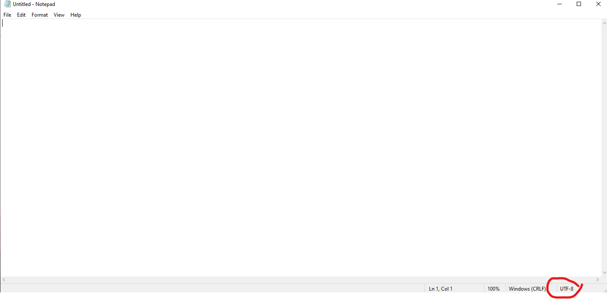
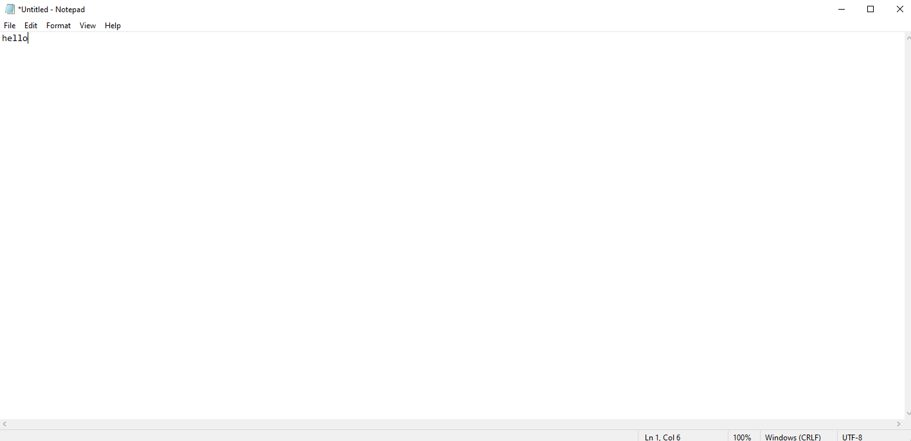
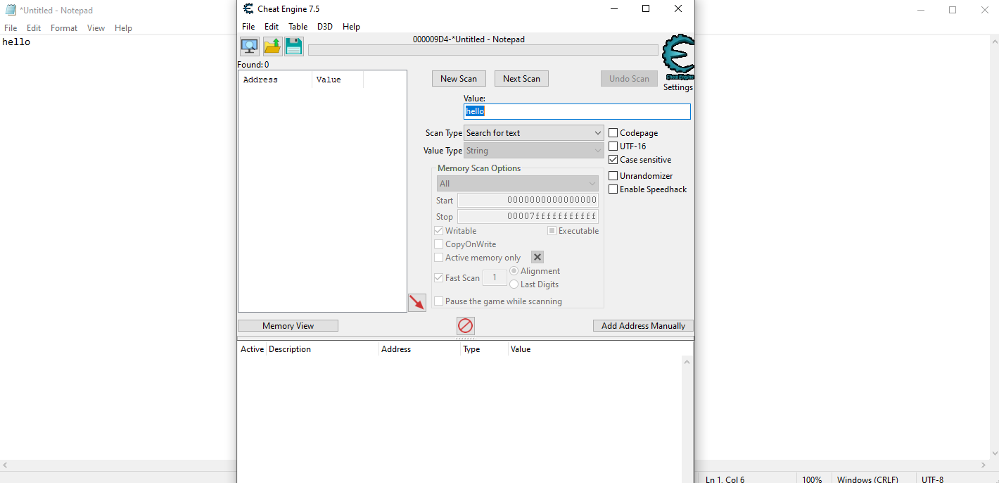
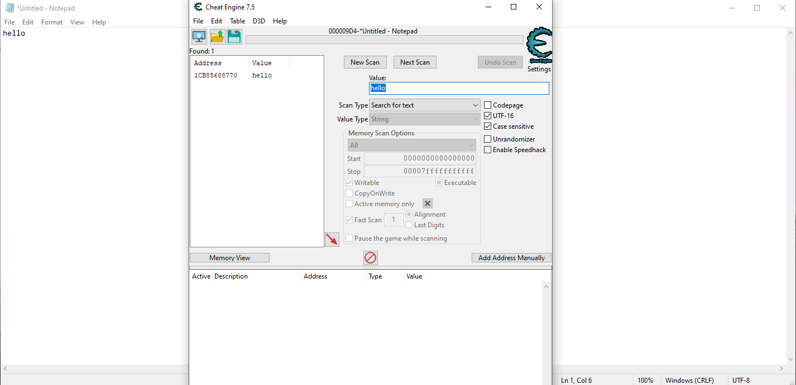

Notepad tapper
Sep 1 2024
Disclaimer: The techniques discussed here work on Windows 10 notepad, but not Windows 11 notepad
Introduction
In this blog, I'll discuss how you can change data displayed on notepad process using code, and then showcase a simple space shooter game for notepad. We'll use windows api and Cheat Engine to achieve this. For more information of Cheat Engine, please visit: https://wiki.cheatengine.org/index.php?title=Tutorials:Cheat_Engine_Tutorial_Guide_x64. This blog is inspired by Kyle Halladay's post: Hooking Keyboard Input To Play Snake In Notepad.exe
Initial Observe
With Cheat Engine, we can find the address of specific word within notepad process (what we're trying to do). As of notepad, though it specifically say UTF_8 at the bottom right corner, data is actually encoded by UTF_16.

How we know it? Let's examine using Cheat Engine. Let's try to find address of hello in the memory

Fire up Cheat Engine and search for hello in UTF_8 we have nothing in return

However, if we change the search to UTF_16, an address pops up

Change value of this memory address will result in change in notepad process. With this in mind, we'll use code to automate our process. First, we'll try to find the memmory address associated with a value matched target pattern. Then. we'll try to change the value, and update the windows.
Find pattern
VirtualQueryEx will help us run through all memmory address of target process (region size, data, premission, ...). We then check if the region has COMMIT and READWRITE permission. Once we capture all of those region, we'll initiate our find pattern function to find our target address.
char* GetProcessMemory(DWORD proc_id, char *pattern, size_t patternLen){
HANDLE hproc = OpenProcess(PROCESS_ALL_ACCESS, false, proc_id);
LPVOID base = 0x0;
MEMORY_BASIC_INFORMATION memInfo;
size_t bytesread;
int skip = 0;
while (VirtualQueryEx(hproc, base, &memInfo, sizeof(memInfo))){
if (skip > 4){
if (memInfo.State == MEM_COMMIT && memInfo.Protect == PAGE_READWRITE){
char *lpBuffer = (char *)malloc(memInfo.RegionSize);
ReadProcessMemory(hproc, base, lpBuffer, memInfo.RegionSize, NULL);
char* match = FindPattern(lpBuffer, memInfo.RegionSize, pattern, patternLen);
if (match){
uint64_t diff = (uint64_t)match - (uint64_t)(lpBuffer);
char* processPtr = (char *)base + diff;
return processPtr;
}
}
}
// cout << endl << endl;
skip ++;
base += memInfo.RegionSize;
}
return nullptr;
}
To find pattern, first we'll initiate a pointer, ptr, points to the base address of target region. Then we'll move up until ptr is region size away from the base address. This can be done using this code:
char* FindPattern(char* src, size_t srcLen, const char* pattern, size_t patternLen){
char* cur = src;
size_t curPos = 0;
while (curPos < srcLen){
if (memcmp(cur, pattern, patternLen) == 0){
return cur;
}
curPos++;
cur = &src[curPos];
}
return nullptr;
}
Next up, it's time to change the value and we all done.
Change value
There's a problem with changing value in memory address: 1) Value is changed but notepad's display may not be updated immediately. Manual interact with notepad process is required. 2) Region size is fixed. Updated value is constrained within that box.
Tackling (1) is not that hard. Windows offers InvalidateRect functionality, which can force a process's window to update.
bool UpdateProcessMemory(DWORD proc_id, LPVOID base, size_t size){
HANDLE hproc = OpenProcess(PROCESS_ALL_ACCESS, false, proc_id);
MEMORY_BASIC_INFORMATION memInfo;
// char *payload = UTF16Convert((char *)target.c_str());
if(!WriteProcessMemory(hproc, base, buffer, size, NULL)){
return false;
}
RECT r;
GetClientRect(notepad_hwnd, &r);
InvalidateRect(notepad_hwnd, &r, false);
return true;
}
Let's get into space shooter for notepad
Space shooter
Each line in notepad associates with one memory address. To make a game, we'll need to have the control of entire screen or notepad windows. To achieve this, the simplest way is to enable word wrap in notepad; we just have to deal with 1 giant word (1 memory address).
However, recording keyboard input is not that easy. There's one way we can global hook keyboard; however, this will make anytime we press a key, an action will be initiated to space shooter game, no matter if we have notepad process as active window or not. To achieve this, we can install hook inside notepad process, then use socket api to transfer key stroke out to the main program to update space shooter.
Our plan here in general is to build a dll that acts both like a keystroke capture and a socket client. We'll then hook that dll into notepad process.
SetWindowsHookExA really actually helps hook keyboard with a dll. Payload dll should be loaded first by LoadLibraryA. Once it's loaded, export function will be accessible to main program, whose address got by GetProcessAddress can be used in SetWindowsHookExA.
void InstallHook(DWORD thread_id){
TCHAR dll_path[MAX_PATH];
GetFullPathName(TEXT("./keyboard_dll.dll"), MAX_PATH, dll_path, NULL);
cout << dll_path << endl;
HMODULE hooklib = LoadLibraryA((LPCSTR)dll_path);
HOOKPROC hookfunc = (HOOKPROC)GetProcAddress(hooklib, "HookProcedure");
HHOOK keyboardhook = SetWindowsHookExA(WH_KEYBOARD, hookfunc, hooklib, thread_id);
cout << "Run" << endl;
while(GetMessage(NULL, NULL, WM_KEYFIRST, WM_KEYLAST)){}
UnhookWindowsHookEx(keyboardhook);
}
Write dll
One can compile dll from C++ or C code; basically the way C++ and C code works and written is the same; however, with C++, we have to wrap the following around our exported function:
#ifdef __cplusplus
extern "C" {
#endif
#ifdef __cplusplus
}
#endif
Funtion to be exported can be defined like this:
__declspec(dllexport) LRESULT CALLBACK name_of_function(param)
Within dll file, DllMain is the entrypoint. DllMain can be defined like this
BOOL WINAPI DllMain(HINSTANCE hinstDLL, DWORD fdwReason, LPVOID lpReserved)
Exported function can be run when dll is attached or detached to or from a process or thread using the following template:
BOOL WINAPI DllMain(HINSTANCE hinstDLL, DWORD fdwReason, LPVOID lpReserved){
switch(fdwReason){
case DLL_PROCESS_ATTACH:
break;
case DLL_THREAD_ATTACH:
break;
case DLL_THREAD_DETACH:
break;
case DLL_PROCESS_DETACH:
break;
}
return TRUE;
}
Dll can be compiled by
g++ name.cpp -shared -o name.dll
Sometimes, additional library flag needs to be added to compile, for example -lws2_32 for socket use
Wrap up
24d8c0b19ce903c5812038c84cc93cb407e6bfa0
I'll not discuss how to set up socket server and client using windows api here, but this documentation might help: Socket Client and Socket Server
Putting it all together, dll and server code can be found in my Github repo
I'll not discuss in detail the logic of game shooter here, but the code for it can be found in my Github repo as well
The full code can be found here.
Here's some result: